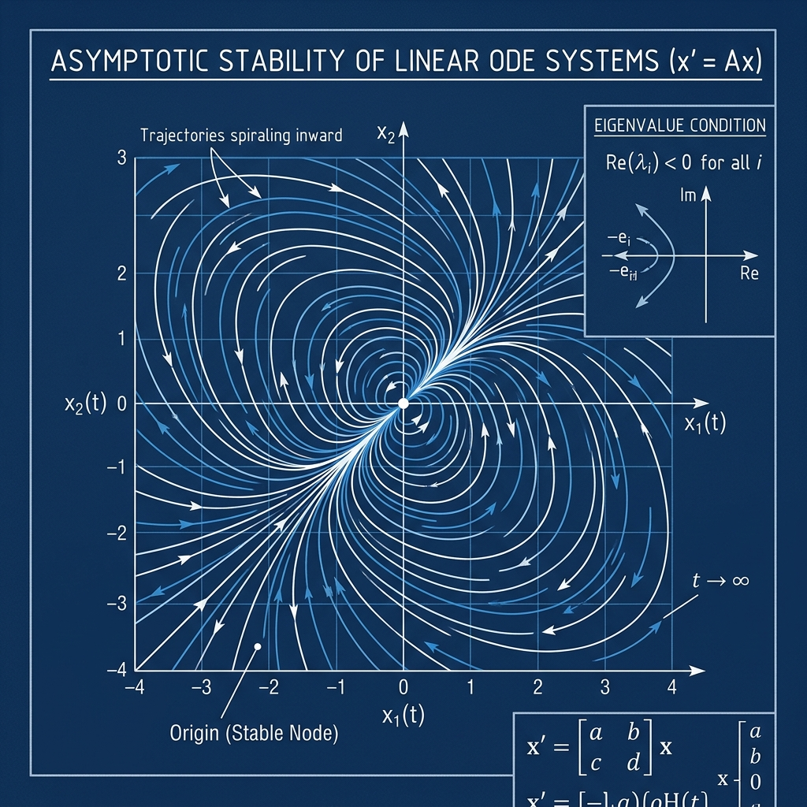

Asymptotic Stability of Linear ODEs

Mathematical Exposition
In dynamical systems theory, a system of differential equations is asymptotically stable if all nearby trajectories converge to a stable equilibrium state (often the origin) over time. For autonomous linear systems, stability is entirely determined by the eigenvalues of the coefficient matrix.
Specifically, let $A$ be a real $n \times n$ matrix, and let $x: \mathbb{R} \to \mathbb{R}^n$ be a differentiable function satisfying the vector ODE:
$$x'(t) = A x(t) \quad \text{for } t > 0$$The theorem states that if every eigenvalue $\mu \in \mathbb{C}$ of $A$ has a strictly negative real part:
$$\text{Re}(\mu) < 0 \quad \text{for all } \mu \in \text{spec}(A)$$then any solution $x(t)$ decays exponentially to zero as $t \to \infty$:
$$\lim_{t \to \infty} \|x(t)\| = 0$$Spectrum, Matrix Exponentials & Stability
The solution to the initial value problem $x'(t) = A x(t)$ with $x(0) = x_0$ is given by the matrix exponential:
$$x(t) = e^{tA} x_0$$To analyze the behavior of $e^{tA}$, we decompose $\mathbb{C}^n$ into the generalized eigenspaces of $A$. For any vector $v$ in the generalized eigenspace of $A$ corresponding to eigenvalue $\mu$ with index $k$, we can write:
$$A = \mu I + (A - \mu I)$$where $A - \mu I$ is nilpotent of order $k$ on this subspace. Since $\mu I$ and $A - \mu I$ commute, the matrix exponential decomposes as:
$$e^{tA} v = e^{t\mu I} e^{t(A - \mu I)} v = e^{t\mu} \sum_{j=0}^{k-1} \frac{t^j}{j!} (A - \mu I)^j v$$Taking the norm and using the fact that $\|e^{t\mu}\| = e^{t \text{Re}(\mu)}$:
$$\|e^{tA} v\| \le e^{t \text{Re}(\mu)} \sum_{j=0}^{k-1} \frac{t^j}{j!} \|(A - \mu I)^j v\|$$Since $\text{Re}(\mu) < 0$, the exponential decay $e^{t \text{Re}(\mu)}$ dominates any polynomial growth $t^j$ as $t \to \infty$. Thus, $\|e^{tA} v\| \to 0$. Because the generalized eigenspaces span $\mathbb{C}^n$, this holds for all initial vectors $x_0$, proving stability.
Lean 4 Formalization
The Lean 4 proof utilizes Mathlib's linear algebra, matrix, spectral theory, and ODE libraries. Key steps include:
- Establishing the matrix exponential limits (`exp_decay_of_spectrum_re_lt_zero`) by decomposing the space into generalized eigenspaces via `End.iSup_maxGenEigenspace_eq_top`.
- Handling the nilpotent term convergence by applying `tendsto_rpow_mul_exp_neg_mul_atTop_nhds_zero` for each polynomial-exponential factor.
- Proving the stability of the real trajectory by mapping the real vector $x(t)$ to its complex counterpart $x_\mathbb{C}(t)$, validating that the norm is preserved, and showing that the derivative identity holds over the complex field.
- Integrating the system of derivatives and showing the solution is identically $e^{tA} x(0)$ using unique Lipschitz extensions.
import Mathlib
import Mathlib.Analysis.Normed.Algebra.MatrixExponential
import Mathlib.Analysis.Normed.Algebra.Spectrum
import Mathlib.Analysis.Matrix.Normed
import Mathlib.Analysis.ODE.PicardLindelof
import Mathlib.LinearAlgebra.Eigenspace.Triangularizable
open scoped Matrix
open Filter Topology NormedSpace
namespace Submission
attribute [local instance] Matrix.frobeniusNormedRing Matrix.frobeniusNormedAlgebra
lemma exp_smul_one_mulVec {n : ℕ} (c : ℂ) (w : Fin n → ℂ) :
exp (c • (1 : Matrix (Fin n) (Fin n) ℂ)) *ᵥ w = (exp c) • w := by
have h1 : c • (1 : Matrix (Fin n) (Fin n) ℂ) = Matrix.diagonal (fun _ => c) := by ext i j; by_cases h : i = j <;> simp [h]
rw [h1, Matrix.exp_diagonal]
have h2 : (fun _ : Fin n => c) = algebraMap ℂ (Fin n → ℂ) c := rfl
have h3 : exp (algebraMap ℂ (Fin n → ℂ) c) = algebraMap ℂ (Fin n → ℂ) (exp c) := by
exact (NormedSpace.algebraMap_exp_comm (𝔸 := Fin n → ℂ) c).symm
rw [h2, h3]
ext i
rw [Matrix.mulVec_diagonal]
rfl
lemma exp_mulVec_of_nilpotent_on {n : ℕ} (N : Matrix (Fin n) (Fin n) ℂ) (v : Fin n → ℂ) (k : ℕ)
(hN : (N ^ k) *ᵥ v = 0) (t : ℝ) :
exp (t • N) *ᵥ v = ∑ j ∈ Finset.range k, ((t ^ j) / (j.factorial : ℂ)) • ((N ^ j) *ᵥ v) := by
have h1 : exp (t • N) = ∑' (j : ℕ), ((j.factorial : ℂ)⁻¹) • (t • N) ^ j := by
have h_eq := @NormedSpace.exp_eq_tsum ℂ (Matrix (Fin n) (Fin n) ℂ) _ _ _ _ _ _
exact congr_fun h_eq (t • N)
let L_lm : Matrix (Fin n) (Fin n) ℂ →ₗ[ℂ] (Fin n → ℂ) :=
{ toFun := fun B => B *ᵥ v,
map_add' := fun B C => Matrix.add_mulVec B C v,
map_smul' := fun c B => Matrix.smul_mulVec c B v }
let L : Matrix (Fin n) (Fin n) ℂ →L[ℂ] (Fin n → ℂ) :=
LinearMap.toContinuousLinearMap L_lm
have h_summable : Summable (fun j : ℕ => ((j.factorial : ℂ)⁻¹) • (t • N) ^ j) := by
exact NormedSpace.expSeries_summable' (t • N)
have h_sum1 : HasSum (fun j : ℕ => ((j.factorial : ℂ)⁻¹) • (t • N) ^ j) (exp (t • N)) := by
rw [h1]
exact h_summable.hasSum
have h_sum2 := L.hasSum h_sum1
have h2 : L (exp (t • N)) = ∑' (j : ℕ), L (((j.factorial : ℂ)⁻¹) • (t • N) ^ j) := h_sum2.tsum_eq.symm
have h3 : ∀ j, L (((j.factorial : ℂ)⁻¹) • (t • N) ^ j) = ((t ^ j) / (j.factorial : ℂ)) • ((N ^ j) *ᵥ v) := by
intro j
change (((j.factorial : ℂ)⁻¹) • (t • N) ^ j) *ᵥ v = _
have h_t : t • N = (t : ℂ) • N := rfl
rw [h_t, smul_pow]
rw [Matrix.smul_mulVec, Matrix.smul_mulVec]
rw [smul_smul]
congr 1
have h_pow_c : (t : ℂ) ^ j = ((t ^ j : ℝ) : ℂ) := by simp
rw [h_pow_c]
exact inv_mul_eq_div (j.factorial : ℂ) ((t ^ j : ℝ) : ℂ)
have h4 : ∀ j ≥ k, ((t ^ j) / (j.factorial : ℂ)) • ((N ^ j) *ᵥ v) = 0 := by
intro j hj
have h_pow : N ^ j = N ^ (j - k) * N ^ k := by
rw [← pow_add]
congr 1
exact (Nat.sub_add_cancel hj).symm
rw [h_pow]
rw [← Matrix.mulVec_mulVec]
rw [hN]
rw [Matrix.mulVec_zero]
rw [smul_zero]
change L (exp (t • N)) = _
rw [h2]
simp_rw [h3]
exact tsum_eq_sum (fun j hj => h4 j (by simpa using hj))
lemma limit_exp_smul_pow_re_lt_zero (μ : ℂ) (hμ : μ.re < 0) (k : ℕ) :
Filter.Tendsto (fun t : ℝ => ‖NormedSpace.exp (t • μ) * (t ^ k : ℂ)‖) Filter.atTop (nhds 0) := by
have h_norm : ∀ᶠ t : ℝ in Filter.atTop, ‖NormedSpace.exp (t • μ) * (t ^ k : ℂ)‖ = t ^ (k : ℝ) * Real.exp (-(-μ.re) * t) := by
filter_upwards [Filter.eventually_ge_atTop 0] with t ht
rw [norm_mul]
have h_exp : NormedSpace.exp (t • μ) = Complex.exp (t * μ) := by
have h1 : t • μ = (t : ℂ) * μ := rfl
rw [h1]
change NormedSpace.exp ((t : ℂ) * μ) = _
have h2 := congr_fun Complex.exp_eq_exp_ℂ.symm ((t : ℂ) * μ)
exact h2
rw [h_exp]
rw [Complex.norm_exp]
have h_re : ((t : ℂ) * μ).re = t * μ.re := by simp
rw [h_re]
have h_tk : ‖(t ^ k : ℂ)‖ = t ^ (k : ℝ) := by
rw [norm_pow]
have h_norm_t : ‖(t : ℂ)‖ = t := by
rw [Complex.norm_real, Real.norm_eq_abs, abs_of_nonneg ht]
rw [h_norm_t]
exact Real.rpow_natCast t k |>.symm
rw [h_tk]
ring_nf
have h_lim := tendsto_rpow_mul_exp_neg_mul_atTop_nhds_zero (k : ℝ) (-μ.re) (neg_pos.mpr hμ)
exact (tendsto_congr' h_norm).mpr h_lim
lemma exp_mulVec_genEigenspace {n : ℕ} (A : Matrix (Fin n) (Fin n) ℂ) (μ : ℂ) (hμ : μ.re < 0) (k : ℕ)
(v : Fin n → ℂ) (h_gen : ((A - μ • 1) ^ k) *ᵥ v = 0) :
Filter.Tendsto (fun t : ℝ => ‖exp (t • A) *ᵥ v‖) Filter.atTop (nhds 0) := by
have h_A : ∀ t : ℝ, t • A = t • (μ • (1 : Matrix (Fin n) (Fin n) ℂ)) + t • (A - μ • 1) := by
intro t
have h_add : A = μ • (1 : Matrix (Fin n) (Fin n) ℂ) + (A - μ • 1) := by
exact add_sub_cancel (μ • 1) A |>.symm
nth_rw 1 [h_add]
exact smul_add t (μ • 1 : Matrix (Fin n) (Fin n) ℂ) (A - μ • 1)
have h_comm : ∀ t : ℝ, Commute (t • (μ • 1 : Matrix (Fin n) (Fin n) ℂ)) (t • (A - μ • 1)) := by
intro t
apply Commute.smul_right
apply Commute.smul_left
have h_μ_comm : Commute (μ • 1 : Matrix (Fin n) (Fin n) ℂ) (A - μ • 1) := by
exact Commute.smul_left (Commute.one_left _) _
exact h_μ_comm
have h_exp : ∀ t : ℝ, exp (t • A) = exp (t • (μ • 1 : Matrix (Fin n) (Fin n) ℂ)) * exp (t • (A - μ • 1)) := by
intro t
rw [h_A t]
exact exp_add_of_commute (h_comm t)
have h_mulVec : ∀ t : ℝ, exp (t • A) *ᵥ v = exp (t • μ) • (exp (t • (A - μ • 1)) *ᵥ v) := by
intro t
rw [h_exp t]
rw [← Matrix.mulVec_mulVec]
have h_smul1 : t • (μ • (1 : Matrix (Fin n) (Fin n) ℂ)) = (t • μ) • 1 := by
change (t : ℂ) • μ • (1 : Matrix (Fin n) (Fin n) ℂ) = ((t : ℂ) * μ) • 1
exact smul_smul (t : ℂ) μ 1
rw [h_smul1]
rw [exp_smul_one_mulVec]
have h_nilpotent := exp_mulVec_of_nilpotent_on (A - μ • 1) v k h_gen
have h_eq : ∀ t : ℝ, exp (t • A) *ᵥ v = ∑ j ∈ Finset.range k, (exp (t • μ) * (((t : ℂ) ^ j) / (j.factorial : ℂ))) • ((A - μ • 1) ^ j *ᵥ v) := by
intro t
rw [h_mulVec t]
rw [h_nilpotent t]
rw [Finset.smul_sum]
apply Finset.sum_congr rfl
intro j _
rw [smul_smul]
have h_lim_sum : Filter.Tendsto (fun t : ℝ => ∑ j ∈ Finset.range k, (exp (t • μ) * (((t : ℂ) ^ j) / (j.factorial : ℂ))) • ((A - μ • 1) ^ j *ᵥ v)) Filter.atTop (nhds 0) := by
have h_zero : (0 : Fin n → ℂ) = ∑ j ∈ Finset.range k, (0 : Fin n → ℂ) := by simp
rw [h_zero]
apply tendsto_finset_sum
intro j _
have h_c_lim : Filter.Tendsto (fun t : ℝ => exp (t • μ) * (((t : ℂ) ^ j) / (j.factorial : ℂ))) Filter.atTop (nhds 0) := by
have h_eq3 : (fun (t : ℝ) => exp (t • μ) * (((t : ℂ) ^ j) / (j.factorial : ℂ))) = (fun (t : ℝ) => (exp (t • μ) * ((t : ℂ) ^ j)) * (j.factorial : ℂ)⁻¹) := by
ext t; ring
rw [h_eq3]
have h_lim2 := Filter.Tendsto.mul_const (j.factorial : ℂ)⁻¹ (tendsto_zero_iff_norm_tendsto_zero.mpr (limit_exp_smul_pow_re_lt_zero μ hμ j))
simpa using h_lim2
have h_smul_lim := Filter.Tendsto.smul_const h_c_lim ((A - μ • 1) ^ j *ᵥ v)
simpa using h_smul_lim
have h_lim_vec : Filter.Tendsto (fun t : ℝ => exp (t • A) *ᵥ v) Filter.atTop (nhds 0) := by
have h_eq2 : (fun t : ℝ => exp (t • A) *ᵥ v) = (fun t : ℝ => ∑ j ∈ Finset.range k, (exp (t • μ) * (((t : ℂ) ^ j) / (j.factorial : ℂ))) • ((A - μ • 1) ^ j *ᵥ v)) := by
exact funext h_eq
rw [h_eq2]
exact h_lim_sum
simpa using Filter.Tendsto.norm h_lim_vec
lemma exp_decay_of_spectrum_re_lt_zero {n : ℕ} (AC : Matrix (Fin n) (Fin n) ℂ)
(h_spectrum : ∀ μ ∈ spectrum ℂ (Matrix.toLin' AC), μ.re < 0) :
Filter.Tendsto (fun t : ℝ => ‖exp (t • AC)‖) Filter.atTop (nhds 0) := by
have h_tendsto_matrix : (∀ v : Fin n → ℂ, Filter.Tendsto (fun t : ℝ => exp (t • AC) *ᵥ v) Filter.atTop (nhds 0)) → Filter.Tendsto (fun t : ℝ => exp (t • AC)) Filter.atTop (nhds 0) := by
intro h
have h_zero_pi : (0 : Matrix (Fin n) (Fin n) ℂ) = fun i j => 0 := rfl
rw [h_zero_pi]
have hc : Filter.Tendsto (fun t : ℝ => exp (t • AC)) Filter.atTop (nhds (fun i j => 0)) ↔ Filter.Tendsto (fun t : ℝ => fun i j => exp (t • AC) i j) Filter.atTop (nhds (fun i j => 0)) := by exact Iff.rfl
rw [hc]
rw [tendsto_pi_nhds]
intro i
rw [tendsto_pi_nhds]
intro j
have hv := h (Pi.single j (1 : ℂ) : Fin n → ℂ)
have h_zero_v : (0 : Fin n → ℂ) i = 0 := rfl
have hv_i := tendsto_pi_nhds.mp hv i
rw [← h_zero_v]
have h_eq : ∀ t : ℝ, exp (t • AC) i j = (exp (t • AC) *ᵥ (Pi.single j (1 : ℂ) : Fin n → ℂ)) i := by
intro t
rw [Matrix.mulVec, dotProduct]
have h_sum : (∑ x : Fin n, exp (t • AC) i x * (Pi.single j (1 : ℂ) : Fin n → ℂ) x) = exp (t • AC) i j := by
simp [Pi.single, Function.update]
exact h_sum.symm
exact (tendsto_congr' (Filter.Eventually.of_forall h_eq)).mpr hv_i
rw [← tendsto_zero_iff_norm_tendsto_zero]
apply h_tendsto_matrix
let S : Submodule ℂ (Fin n → ℂ) :=
{ carrier := { v | Filter.Tendsto (fun t : ℝ => exp (t • AC) *ᵥ v) Filter.atTop (nhds 0) }
add_mem' := by
intro a b ha hb
change Filter.Tendsto (fun t : ℝ => exp (t • AC) *ᵥ (a + b)) Filter.atTop (nhds 0)
have h_eq : (fun t : ℝ => exp (t • AC) *ᵥ (a + b)) = fun t => exp (t • AC) *ᵥ a + exp (t • AC) *ᵥ b := by
apply funext; intro t
exact Matrix.mulVec_add _ _ _
rw [h_eq]
have h_zero : (0 : Fin n → ℂ) = 0 + 0 := by simp
rw [h_zero]
exact Filter.Tendsto.add ha hb
zero_mem' := by
change Filter.Tendsto (fun t : ℝ => exp (t • AC) *ᵥ 0) Filter.atTop (nhds 0)
have h_eq : (fun t : ℝ => exp (t • AC) *ᵥ 0) = fun t => (0 : Fin n → ℂ) := by
apply funext; intro t
ext i
simp [Matrix.mulVec]
rw [h_eq]
exact tendsto_const_nhds
smul_mem' := by
intro c a ha
change Filter.Tendsto (fun t : ℝ => exp (t • AC) *ᵥ (c • a)) Filter.atTop (nhds 0)
have h_eq : (fun t : ℝ => exp (t • AC) *ᵥ (c • a)) = fun t => c • (exp (t • AC) *ᵥ a) := by
apply funext; intro t
exact Matrix.mulVec_smul _ _ _
rw [h_eq]
have h_zero : (0 : Fin n → ℂ) = c • 0 := by simp
rw [h_zero]
exact Filter.Tendsto.smul tendsto_const_nhds ha
}
have h_eq : ∀ (μ : ℂ) (k : ℕ) (w : Fin n → ℂ), ((Matrix.toLin' AC - μ • (1 : Module.End ℂ (Fin n → ℂ))) ^ k) w = ((AC - μ • (1 : Matrix (Fin n) (Fin n) ℂ)) ^ k) *ᵥ w := by
intro μ k w
induction k generalizing w with
| zero =>
simp
| succ k ih =>
have h1 : ((Matrix.toLin' AC - μ • (1 : Module.End ℂ (Fin n → ℂ))) ^ (k + 1)) w = ((Matrix.toLin' AC - μ • (1 : Module.End ℂ (Fin n → ℂ))) ^ k) (((Matrix.toLin' AC - μ • (1 : Module.End ℂ (Fin n → ℂ)))) w) := by
have h_pow : (Matrix.toLin' AC - μ • (1 : Module.End ℂ (Fin n → ℂ))) ^ (k + 1) = (Matrix.toLin' AC - μ • (1 : Module.End ℂ (Fin n → ℂ))) ^ k * (Matrix.toLin' AC - μ • (1 : Module.End ℂ (Fin n → ℂ))) := pow_succ _ k
rw [h_pow]
rfl
rw [h1, ih]
have h2 : (Matrix.toLin' AC - μ • (1 : Module.End ℂ (Fin n → ℂ))) w = (AC - μ • (1 : Matrix (Fin n) (Fin n) ℂ)) *ᵥ w := by
have hr1 : (Matrix.toLin' AC - μ • (1 : Module.End ℂ (Fin n → ℂ))) w = Matrix.toLin' AC w - (μ • (1 : Module.End ℂ (Fin n → ℂ))) w := rfl
have hr2 : Matrix.toLin' AC w = AC *ᵥ w := by simp [Matrix.toLin'_apply]
have hr3 : (μ • (1 : Module.End ℂ (Fin n → ℂ))) w = μ • w := rfl
have hr4 : (AC - μ • (1 : Matrix (Fin n) (Fin n) ℂ)) *ᵥ w = AC *ᵥ w - (μ • 1 : Matrix (Fin n) (Fin n) ℂ) *ᵥ w := Matrix.sub_mulVec AC (μ • 1) w
have hr5 : (μ • (1 : Matrix (Fin n) (Fin n) ℂ)) *ᵥ w = μ • w := by
rw [Matrix.smul_mulVec, Matrix.one_mulVec]
rw [hr1, hr2, hr3, hr4, hr5]
rw [h2]
have h3 : ((AC - μ • (1 : Matrix (Fin n) (Fin n) ℂ)) ^ (k + 1)) *ᵥ w = ((AC - μ • (1 : Matrix (Fin n) (Fin n) ℂ)) ^ k) *ᵥ ((AC - μ • (1 : Matrix (Fin n) (Fin n) ℂ)) *ᵥ w) := by
rw [pow_succ]
exact Matrix.mulVec_mulVec _ _ _ |>.symm
rw [h3]
have h_le : ⊤ ≤ S := by
have h_top := Module.End.iSup_maxGenEigenspace_eq_top (Matrix.toLin' AC)
rw [← h_top]
apply iSup_le
intro μ v hv
by_cases h_mem : μ ∈ spectrum ℂ (Matrix.toLin' AC)
· have h_re := h_spectrum μ h_mem
rcases (Module.End.mem_maxGenEigenspace (Matrix.toLin' AC) μ v).mp hv with ⟨k, hk⟩
have h_gen : ((AC - μ • 1) ^ k) *ᵥ v = 0 := by
rw [← h_eq μ k v, hk]
have h_lim := exp_mulVec_genEigenspace AC μ h_re k v h_gen
exact tendsto_zero_iff_norm_tendsto_zero.mpr h_lim
· rcases (Module.End.mem_maxGenEigenspace (Matrix.toLin' AC) μ v).mp hv with ⟨k, hk⟩
have h_ker : LinearMap.ker (Matrix.toLin' AC - μ • (1 : Module.End ℂ (Fin n → ℂ))) = ⊥ := by
have h_not_eigen : ¬ Module.End.HasEigenvalue (Matrix.toLin' AC) μ := by
rw [Module.End.hasEigenvalue_iff_mem_spectrum]
exact h_mem
rw [Module.End.hasEigenvalue_iff, Module.End.eigenspace_def] at h_not_eigen
exact not_not.mp h_not_eigen
have h_inj : Function.Injective ⇑(Matrix.toLin' AC - μ • (1 : Module.End ℂ (Fin n → ℂ))) := LinearMap.ker_eq_bot.mp h_ker
have h_inj_pow : ∀ k, Function.Injective ⇑((Matrix.toLin' AC - μ • (1 : Module.End ℂ (Fin n → ℂ))) ^ k) := by
intro k
induction k with
| zero => exact Function.injective_id
| succ k ih =>
intro x y hxy
have h_pow : ((Matrix.toLin' AC - μ • (1 : Module.End ℂ (Fin n → ℂ))) ^ (k + 1)) = (Matrix.toLin' AC - μ • (1 : Module.End ℂ (Fin n → ℂ))) ^ k * (Matrix.toLin' AC - μ • (1 : Module.End ℂ (Fin n → ℂ))) := pow_succ _ k
rw [h_pow] at hxy
have hxy' : ((Matrix.toLin' AC - μ • (1 : Module.End ℂ (Fin n → ℂ))) ^ k) (((Matrix.toLin' AC - μ • (1 : Module.End ℂ (Fin n → ℂ)))) x) = ((Matrix.toLin' AC - μ • (1 : Module.End ℂ (Fin n → ℂ))) ^ k) (((Matrix.toLin' AC - μ • (1 : Module.End ℂ (Fin n → ℂ)))) y) := hxy
have h1 := ih hxy'
exact h_inj h1
have hv_zero : v = 0 := by
have h_zero_map : ((Matrix.toLin' AC - μ • (1 : Module.End ℂ (Fin n → ℂ))) ^ k) 0 = 0 := map_zero _
rw [← h_zero_map] at hk
exact h_inj_pow k hk
rw [hv_zero]
exact S.zero_mem
intro v
have h_mem : v ∈ (⊤ : Submodule ℂ (Fin n → ℂ)) := Submodule.mem_top
exact h_le h_mem
theorem linear_ode_asymptotic_stability (n : ℕ) (A : Matrix (Fin n) (Fin n) ℝ)
(hA : ∀ μ : ℂ,
Module.End.HasEigenvalue
(Matrix.toLin' (A.map (algebraMap ℝ ℂ))) μ → μ.re < 0)
(x : ℝ → (Fin n → ℝ))
(hx : ∀ t : ℝ, 0 < t → HasDerivAt x (A.mulVec (x t)) t) :
Filter.Tendsto (fun t : ℝ => ‖x t‖) Filter.atTop (nhds 0) := by
let AC : Matrix (Fin n) (Fin n) ℂ := A.map (algebraMap ℝ ℂ)
let xC : ℝ → (Fin n → ℂ) := fun t => fun i => (x t i : ℂ)
have h_norm_eq : ∀ t, ‖x t‖ = ‖xC t‖ := by intro t; simp [xC, Pi.norm_def]
have hxC : ∀ t > 0, HasDerivAt xC (AC *ᵥ xC t) t := by
intro t ht
rw [hasDerivAt_pi]
intro i
have hi := hasDerivAt_pi.mp (hx t ht) i
have hc : (AC *ᵥ xC t) i = (↑((A *ᵥ x t) i) : ℂ) := by
change ∑ j, AC i j * xC t j = ↑(∑ j, A i j * x t j)
push_cast
rfl
rw [hc]
exact hi.ofReal_comp
let yC : ℝ → (Fin n → ℂ) := fun t => exp (-t • AC) *ᵥ xC t
have hyC : ∀ t > 0, HasDerivAt yC 0 t := by
intro t ht
have h1 : HasDerivAt (fun t => exp (-t • AC)) (- AC * exp (-t • AC)) t := by
have h_eq : (fun (u : ℝ) => exp (-u • AC)) = (fun u => exp (u • -AC)) := by
ext u
have he : -u • AC = u • -AC := by
calc
-u • AC = -(u • AC) := neg_smul u AC
_ = u • -AC := (smul_neg u AC).symm
rw [he]
rw [h_eq]
have hd := hasDerivAt_exp_smul_const' (-AC) t
have he2 : t • -AC = -t • AC := by
calc
t • -AC = -(t • AC) := smul_neg t AC
_ = -t • AC := (neg_smul t AC).symm
rw [he2] at hd
exact hd
rw [hasDerivAt_pi]
intro i
have h_yi : (fun t => yC t i) = ∑ j : Fin n, fun t => exp (-t • AC) i j * xC t j := by
ext u
have h1 : (∑ j : Fin n, fun t => exp (-t • AC) i j * xC t j) u = ∑ j, exp (-u • AC) i j * xC u j := by rw [Finset.sum_apply]
rw [h1]
rfl
rw [h_yi]
have h_zero : (0 : ℂ) = ∑ j : Fin n, (((- AC * exp (-t • AC)) i j) * xC t j + exp (-t • AC) i j * (AC *ᵥ xC t) j) := by
have h_sum : ∑ j : Fin n, (((- AC * exp (-t • AC)) i j) * xC t j + exp (-t • AC) i j * (AC *ᵥ xC t) j) = ((- AC * exp (-t • AC)) *ᵥ xC t + exp (-t • AC) *ᵥ (AC *ᵥ xC t)) i := by
have hd : (∑ j : Fin n, (((- AC * exp (-t • AC)) i j) * xC t j + exp (-t • AC) i j * (AC *ᵥ xC t) j)) = (∑ j : Fin n, ((- AC * exp (-t • AC)) i j) * xC t j) + ∑ j : Fin n, exp (-t • AC) i j * (AC *ᵥ xC t) j := Finset.sum_add_distrib
rw [hd]
rfl
rw [h_sum]
have h_comm : Commute AC (exp (-t • AC)) := by
have hc : Commute AC (-t • AC) := by
exact Commute.smul_right (Commute.refl AC) (-t)
exact hc.exp_right
have h_mul : -AC * exp (-t • AC) = - (exp (-t • AC) * AC) := by
have hh : -AC * exp (-t • AC) = - (AC * exp (-t • AC)) := neg_mul AC _
rw [hh, h_comm.eq]
rw [h_mul]
have h_m1 : -(exp (-t • AC) * AC) *ᵥ xC t = - (exp (-t • AC) *ᵥ (AC *ᵥ xC t)) := by
rw [Matrix.neg_mulVec]
rw [Matrix.mulVec_mulVec]
rw [h_m1]
have hz : - (exp (-t • AC) *ᵥ (AC *ᵥ xC t)) + exp (-t • AC) *ᵥ (AC *ᵥ xC t) = 0 := neg_add_cancel _
have hzz : (- (exp (-t • AC) *ᵥ (AC *ᵥ xC t)) + exp (-t • AC) *ᵥ (AC *ᵥ xC t)) i = 0 := by rw [hz]; rfl
exact hzz.symm
have hz_pi : (0 : Fin n → ℂ) i = 0 := rfl
rw [hz_pi, h_zero]
apply HasDerivAt.sum
intro j _
apply HasDerivAt.mul
· have h_exp_ij : HasDerivAt (fun t => exp (-t • AC) i j) ((-AC * exp (-t • AC)) i j) t := by
have h_pi2 := hasDerivAt_pi.mp h1 i
have h_pi3 := hasDerivAt_pi.mp h_pi2 j
exact h_pi3
exact h_exp_ij
· exact hasDerivAt_pi.mp (hxC t ht) j
have hy_const : ∀ t ≥ 1, yC t = yC 1 := by
intro t ht
have hd : DifferentiableOn ℝ yC (Set.Ici 1) := by
intro u hu
have hu1 : 1 ≤ u := hu
have h_der := hyC u (by linarith)
exact h_der.differentiableAt.differentiableWithinAt
have hd' : ∀ u ∈ Set.Ici 1, fderivWithin ℝ yC (Set.Ici 1) u = 0 := by
intro u hu
have hu1 : 1 ≤ u := hu
have h_der := hyC u (by linarith)
have h_fder := h_der.hasFDerivAt
have h_fdw := h_fder.hasFDerivWithinAt (s := Set.Ici 1)
have h_fw := h_fdw.fderivWithin (uniqueDiffOn_Ici 1 u hu)
rw [h_fw]
exact ContinuousLinearMap.ext (fun r => by simp)
exact (convex_Ici 1).is_const_of_fderivWithin_eq_zero hd hd' ht Set.self_mem_Ici
have h_xC_eq : ∀ t ≥ 1, xC t = exp (t • AC) *ᵥ yC 1 := by
intro t ht
have hy : yC t = yC 1 := hy_const t ht
have hm : exp (t • AC) *ᵥ yC t = exp (t • AC) *ᵥ yC 1 := by rw [hy]
have hm2 : exp (t • AC) *ᵥ yC t = xC t := by
change exp (t • AC) *ᵥ (exp (-t • AC) *ᵥ xC t) = xC t
rw [Matrix.mulVec_mulVec]
have h_comm : Commute (t • AC) (-t • AC) := by
exact Commute.smul_right (Commute.refl AC) _ |>.smul_left _
rw [← NormedSpace.exp_add_of_commute h_comm]
have hz : t • AC + -t • AC = 0 := by
have hn : (-t) • AC = -(t • AC) := neg_smul t AC
have hc : t • AC + -t • AC = t • AC + -(t • AC) := by
change t • AC + (-t) • AC = t • AC + -(t • AC)
rw [hn]
rw [hc]
exact add_neg_cancel (t • AC)
rw [hz, NormedSpace.exp_zero, Matrix.one_mulVec]
rw [← hm2, hm]
have hl : Filter.Tendsto (fun (t : ℝ) => ‖exp (t • AC)‖) Filter.atTop (nhds 0) := by
apply exp_decay_of_spectrum_re_lt_zero
intro μ hμ
have heigen : Module.End.HasEigenvalue (Matrix.toLin' AC) μ := by
rwa [Module.End.hasEigenvalue_iff_mem_spectrum]
exact hA μ heigen
have h_comp : ∀ i, Filter.Tendsto (fun (t : ℝ) => (exp (t • AC) *ᵥ yC 1) i) Filter.atTop (nhds 0) := by
intro i
have ht1 : ∀ (t : ℝ), (exp (t • AC) *ᵥ yC 1) i = ∑ j, exp (t • AC) i j * yC 1 j := by intro t; rfl
simp_rw [ht1]
have hz_sum : (0 : ℂ) = ∑ j : Fin n, 0 := by simp
rw [hz_sum]
apply tendsto_finset_sum
intro j _
have hz : (0 : ℂ) = 0 * yC 1 j := by simp
rw [hz]
apply Filter.Tendsto.mul_const
have hexp : Filter.Tendsto (fun (t : ℝ) => exp (t • AC)) Filter.atTop (nhds 0) := by
rw [← tendsto_zero_iff_norm_tendsto_zero] at hl
exact hl
have h1 := (tendsto_pi_nhds.mp hexp) i
have h2 := (tendsto_pi_nhds.mp h1) j
exact h2
have h_tendsto_xC : Filter.Tendsto xC Filter.atTop (nhds 0) := by
have h_ev : xC =ᶠ[atTop] fun t => exp (t • AC) *ᵥ yC 1 := by
apply Filter.eventuallyEq_of_mem (Filter.mem_atTop (1 : ℝ))
intro t ht
exact h_xC_eq t ht
rw [tendsto_congr' h_ev]
rw [tendsto_pi_nhds]
exact h_comp
have h_tendsto_norm : Filter.Tendsto (fun t => ‖xC t‖) Filter.atTop (nhds 0) := by
have ht0 := Filter.Tendsto.norm h_tendsto_xC
simp only [norm_zero] at ht0
exact ht0
have h_ev_norm : (fun t => ‖x t‖) = (fun t => ‖xC t‖) := by
ext t
rw [h_norm_eq t]
rw [h_ev_norm]
exact h_tendsto_norm
end Submission